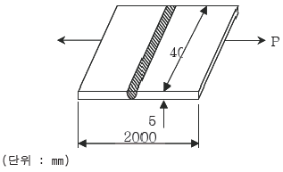
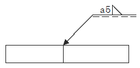

용접기능장 (2008-03-30 기출문제)
1과목: 임의구분
1. 아세틸렌 가스의 용해에 대한 설명으로 틀린 것은?
- 물에는 1배 용해된다.
- 석유에는 2배 용해된다.
- 벤젠에는 10배 용해된다.
- 아세톤에는 25배 용해된다.
(정답률: 53%)

2. 피복 아크 용접봉의 피복제의 역할이 아닌 것은?
- 아크를 안정시킨다.
- 파형이 고운 비드를 만든다.
- 용착 금속을 보호한다.
- 스패터의 발생을 많게 한다.
(정답률: 87%)
3. 가스용접에서 압력조정기의 구비조건 중 잘못된 것은?
- 용기 내의 가스량의 변화에 따라 조정압력이 변할 것
- 조정압력과 사용 압력과의 차이가 적을 것
- 사용할 때 빙결하는 일이 없을 것
- 가스의 방출량이 많아도 유량이 안정되어 있을 것
(정답률: 81%)
4. 아크 전류가 일정할 때 아크 전압이 높아지면 용접봉의 용융속도가 늦어지고 아크전압이 낮아지면 용융속도가 빨라지는 아크 특성은?
- 부저항 특성
- 절연회복 특성
- 전압회복 특성
- 아크 길이 자기제어 특성
(정답률: 88%)
5. 필릿 용접의 이음 강도를 계산할 때 다리길이가 10mm이라면 이론 목두께는 약 mm 인가?
- 5
- 7
- 9
- 11
(정답률: 85%)
6. 정격 2차 전류 250A, 정격사용률 40%의 아크 용접기로써 실제로 200A의 전류로 용접한다면 허용 사용률은 몇 %인가?(오류 신고가 접수된 문제입니다. 반드시 정답과 해설을 확인하시기 바랍니다.)
- 22.5
- 42.5
- 52.5
- 82.5
(정답률: 70%)
7. 가스용접 작업엣 일어날 수 있는 재해가 아닌 것은 ?
- 화상
- 화재
- 전격
- 가스폭발
(정답률: 89%)
8. 용접구조물을 리벳구조물과 비교할 때 용접구조물의 장점으로 틀린 것은?
- 잔류응력이 발생하지 않는다.
- 재료의 절약도 가능하게 되고 무게도 경감된다.
- 리벳구멍에 의한 유효단면적의 감소가 없으므로 이음 효율이 높다.
- 리벳이음에 비해 수밀, 유밀, 기밀유지가 잘 된다.
(정답률: 88%)
9. 프로판가스용 절단팁에 대한 고려사항으로 아닌 것은?
- 프로판은 아세틸렌보다 연소속도가 느리므로 가스 분출속도를 느리게 한다.
- 예열불꽃의 구멍을 크게 하고 개수도 많이 하여 불꽃이 깨지지 않게 한다.
- 팁 선단에 슬리브를 약 1.5mm 정도 가공면보다 길게 한다.
- 프로판 가스와 산소의 비중에 차이가 있으므로 토치의 혼합실을 작게 한다.
(정답률: 52%)
10. 토치를 사용하여 용접부분의 뒷면을 따내든지 U형, H형의용접 홈 가공법으로 일명 가스 파내기라고도 하는 것은?
- 스카핑
- 가스 가우징
- 산소창 절단
- 포갬절단
(정답률: 92%)
11. 연강용 피복 아크 용접봉 E4316의 피복제 계통은?
- 일미나이트계
- 저수소계
- 고산화티탄계
- 철분산화철계
(정답률: 94%)
12. 가스 절단에 대한 설명으로 틀린 것은?
- 가스 절단은 아세틸렌과 공기의 화학작용에 의한 것이다.
- 절단재의 두꺼운 것을 절단하기 위해서는 절단산소의 양을 증가 시켜야 한다.
- 가스 절단시 화학반응열은 예열에 이용된다.
- 철에 포함된 많은 탄소는 절단을 방해한다.
(정답률: 71%)
13. 수동 피복 아크 용접에서 양호한 용접을 하려면 짧은 아크를 사용하여야 하는데 아크 길이가 적당할 때 나타나는 현상이 아닌 것은?
- 아크가 안정된다.
- 양호한 용접부를 얻을 수 있다.
- 산화 및 질화 되기 쉽다.
- 정상적인 입자가 형성된다.
(정답률: 97%)
14. 용접 케이블에 대한 설명으로 틀린 것은?
- 2차측 케이블은 유연성이 좋은 캡타이어 전선을 사용한다.
- 전원에서 용접기에 연결하는 케이블을 2차측 케이블이라 한다.
- 2차측 케이블은 저전압 대전류를 사용한다.
- 2차측 케이블에 비하여 1차측 케이블은 움직임이 별로 없다.
(정답률: 84%)
15. 가스절단에서 예열불꽃의 역할이 아닌 것은?
- 절단 개시점을 발화온도로 가열한다.
- 절단 산소의 순도 저하를 촉진시킨다.
- 절단 산소의 운동량을 유지한다.
- 절단재의 표면 스케일 등을 박리시켜 절단 산소와의 반응을 용이하게 한다.
(정답률: 86%)
16. 피복 금속 아크 용접시 발생하기 쉬운 재해가 아닌것은?
- 전격
- 결막염
- 폭발
- 화상
(정답률: 85%)
17. 다음 중 압접에 해당 되는 용접법은?
- 스폿 용접
- 피복금속 아크 용접
- 전자 빔 용접
- 테르밋 용접
(정답률: 86%)
18. 탄산가스 아크용접(CO2 gas shielded arc Welding)의 원리와 같은 용접방식은?
- 미그(MIG)용접
- 서브머지드 용접
- 피복금속 아크 용접
- 원자수소 용접
(정답률: 85%)
19. 납땜에 사용되는 용재가 갖추어야 할 조건으로 잘못된 것은?
- 납땜의 표면 장력을 맞추어서 모재와의 친화력을 높일 것
- 청정한 금속면의 산화를 방지할 것
- 모재나 납땜에 대한 부식 작용이 최대일 것
- 납땜 후 슬래그의 제거가 용이할 것
(정답률: 93%)
20. 미그(MIG)용접에서 용융속도의 표시 방법은?
- 모재의 두께
- 분당 보호가스 유출량
- 용접봉의 굵기
- 분당 용융되는 와이어의 길이, 무게
(정답률: 97%)
2과목: 임의구분
21. 플라스마 아크 용접에서 플라스마 아크는 일반적으로 몇 도의 온도를 얻을 수 있는가?
- 30000 ~ 50000°C
- 10000 ~ 30000°C
- 5000 ~ 8000°C
- 4000 ~ 6000°C
(정답률: 82%)
22. 이산화탄소 아크 용접 20ℓ/min의 유량으로 연속사용할 경우 액체 이산화탄소 25kgf 들이 용기는 대기중에 가스량이 약 12700ℓ라 할 때 약 몇 시간 정도 사용할 수 있는가?
- 6
- 10
- 15
- 20
(정답률: 63%)
23. 서브머지드 아크 용접용 용제의 구비조건이 아닌것은?
- 아크발생을 안정시켜 안정된 용접을 할수 있을 것
- 적당한 수분을 흡수하고 유지하여 양호한 비드를 얻을 것
- 용접 후 슬래그의 이탈성이 좋을 것
- 적당한 입도를 가져 아크의 보호성이 좋을 것
(정답률: 83%)
24. TIG 용접봉 토치는 사용전류에 따라 공랭식과 수냉식으로 분류하는데 일반적으로 공랭식 토치는 전류 몇A 이하에서 사용하는가?
- 200
- 300
- 400
- 500
(정답률: 64%)
25. 다음 중 원자수소 용접에 이용되는 용접열은 얼마나 되는가?
- 2000 ~ 3000°C
- 3000 ~ 4000°C
- 4000 ~ 5000°C
- 5000 ~ 6000°C
(정답률: 68%)
26. 서브머지드 아크용접의 다전극 용접기에서 비드 폭이 넓고 용입이 깊은 용접부를 얻을 수 있는 방식은?
- 텐덤식
- 횡 직렬식
- 횡 별렬식
- 유니언식
(정답률: 45%)
27. 가스 용접기의 안전 사항을 바르게 설명한 것은?
- 고무 호스의 길이는 가스용기와 멀리 떨어져 작업하기 위하여 되도록 길게 한다.
- 도관은 되도록 굴곡이 많은 수록 가스의 흐름에 좋다.
- 호스 연결부의 가스 누설검사는 비눗물로 검사한다.
- 산소 용기 밸브와 압력 조정기의 연결부는 부식되지 않도록 그리스를 칠하여 연결한다.
(정답률: 73%)
28. TIG 용접에서 사용되는 전극의 조건으로 틀린 것은 ?
- 저용융점의 금속
- 전자 방출이 잘 되는 금속
- 전기 저항률이 적은 금속
- 열 전도성이 좋은 금속
(정답률: 79%)
29. 다음 용접 중 저항열(줄의 열)을 이용하여 용접하는 것은?
- 탄산가스 아크 용접
- 일렉트로 슬래그 용접
- 전자 빔 용접
- 테르밋 용접
(정답률: 69%)
30. 순철에 포함되어 있는 불순물 중 AC3 점의 변태온도를 저하시키는 원소가 아닌 것은?
- Mn
- Cu
- C
- V
(정답률: 54%)
31. 연강에서 탄소가 증가할 수록 기계적 성질은 일반적으로 어떻게 변하는가?
- 인장강도, 경도 및 연신율이 모두 감소한다.
- 인장강도, 경도 및 연신율이 모두 증가한다.
- 인장강도와 연신율은 증가하나 경도는 감소한다.
- 인장강도와 경도는 증가되고 연신율은 감소한다.
(정답률: 72%)
32. 주철과 비교한 주강의 특징 설명으로 옳은 것은?
- 기계적 성질이 좋다.
- 주조성이 좋다.
- 용융점이 낮다.
- 수축률이 작다.
(정답률: 57%)
33. 강재의 KS 기호 중 틀린 것은?
- STS : 절삭용 합금 공구강재
- SKH : 고속도 공구강 강재
- SNC : 니켈 크롬강 강재
- STC : 기계구조용 탄소 강재
(정답률: 62%)
34. 표면경화법 중 침탄법에 속하는 것들로만 짝지어진것은?
- 질화침탄법 - 고주파침탄법 - 방전침탄법
- 고체침탄법 - 액체침탄법 - 가스침탄법
- 세라침탄법 - 마템퍼침탄법 - 크로마이징침탄법
- 항온침탄법 - 칼로침탄법 - 뜨임침탄법
(정답률: 83%)
35. 스테인리스강 용접시 열영향부 부근의 부식저항이 감소되어 입계부식 저항이 일어나기 쉬운데 이러한 현상의 주된 원인은?
- 탄화물의 석출로 크롬 함유량 감소
- 산화물의 석출로 니켈 함유량 감소
- 수소의 침투로 니켈 함유량 감소
- 유황의 편석으로 크롬 함유량 감소
(정답률: 79%)
36. 강의 담금질 조직엣 경도순서를 바르게 표시한 것은?
- 마텐자이트 ＞ 트루스타이트 ＞ 솔바이트 ＞오스테나이트
- 마텐자이트 ＞ 솔바이트 ＞ 오스테나이트＞ 트루스타이트
- 마텐자이트 ＞ 트루스타이트 ＞오스테나이트＞ 솔바이트
- 마텐자이트 ＞솔바이트 ＞ 트루스타이트 ＞ 오스테나이트
(정답률: 75%)
37. 다이캐스팅용 알루미늄합금에 요구되는 성질이 아닌 것은?
- 유동성이 좋을 것
- 금형에 대한 점착성이 좋을 것
- 응고 수축에 대한 용탕 보급성이 좋을 것
- 열간 취성이 작을 것
(정답률: 55%)
38. 용접부에 생기는 잔류응력을 없애기 위한 열처리방법은?
- 뜨임
- 풀림
- 불림
- 담금질
(정답률: 82%)
39. 티탄(Ti)의 종류 중 강도가 높고 용접이 용이한 용접구조용 판재, 관재로 가장 일반적인 것은?
- Ti 1종
- Ti 2
- Ti 3
- Ti 4종
(정답률: 56%)
40. 주철 용접에서 용접이 곤란하고 어려운 이유로 해당하지 않는 것은?
- 주철은 수축이 커서 균열이 생기기 쉽다.
- 일산화탄소가 발생하여 용착금속에 기공이 생기기 쉽다.
- 용접물 전체를 500~600°C의 고온에서 예열 및 후 열을 할 수 있는 설비가 필요하다.
- 주철은 연강보다 연성이 많고 급랭으로 인한 백선화가 되기 어렵다.
(정답률: 67%)
3과목: 임의구분
41. 알루미늄 및 그 합금은 대체로 용접성이 불양한다. 그 이유로 틀린 것은?
- 비열과 열전도도가 대단히 커서 단시간 내에 용융 온도까지 이르기가 힘들다.
- 용융점이 660°C로서 낮은 편이고, 색채에 따라 가열 온도의 판정이 곤란하여 지나치게 용융되기 쉽다.
- 강에 비해 응고수축이 적어 용접 후 변형이 적으나 균열이 생기기 쉽다.
- 용융 응고시에 수소 가스를 흡수하여 기공이 발생되기 쉽다.
(정답률: 28%)
42. 구리(47%)-아연(11%)-니켈(42%)의 합금으로 니켈 함유량이 많을수록 융점이 높고 색은 변색한다. 융점이 높고 강인하므로 철강을 위시하여 동, 황동, 백동, 모넬메탈 등의 납땜에 사용하는 것은?
- 양은납
- 은납
- 인청동납
- 황동납
(정답률: 57%)
43. 다음 이음부의 홈 형상 중 가장 두꺼운 판에 적합한 것은?
- I형
- H형
- V형
- J
(정답률: 74%)
44. 그림과 같은 맞대기 용접시 P = 6000kgf의 하중으로 잡아당겼을 때 모재에 발생 되는 인장응력은 몇 kgf/mm2인가?

- 20
- 30
- 40
- 50
(정답률: 61%)
45. 다음 용접기호를 바르게 설명한 것은?

- 필릿 용접이다.
- 플러그 용접이다.
- 목길이가 5mm이다.
- 루트 간격은 5mm이다.
(정답률: 69%)
46. 용접시 예열에 대한 설명 중 틀린 것은?
- 용접성이 좋은 연강이라도 두께가 약 25mm 이상이 되면 예열은 하는 것이 좋다.
- 예열은 용접부의 냉각속도를 느리게 한다.
- 예열온도는 모재의 재질에 따라 각각 다르다.
- 연강은 0°C 이하의 저온에서는 예열이 불필요하다.
(정답률: 90%)
47. 변형이나 잔류응력을 적게 하기 위한 용접순서 중 잘못된 것은?
- 동일 평면내에 이음이 많은 경우 수축은 가능한 자 유단으로 보낸다.
- 가능한 중앙에 대하여 대칭이 되도록 한다.
- 용접선의 직각 단면 중심축에 대해 수축력 모멘트의 합이 0이 되게 한다.
- 리벳이음과 용접이음을 동시에 할 경우는 리벳작업을 우선한다.
(정답률: 87%)
48. 용접패스상의 언더컷이 발생하는 가장 큰 원인은?
- 용접전류가 너무 높을 때
- 짧은 앜 길이를 유지할 때
- 이음 설계가 부적당할 때
- 용접부가 급랭 될 때
(정답률: 94%)
49. 끝이 둥근 해머로 용접부를 두들겨 주는 피닝(Peening)의 목적과 관계 없는 것은?
- 잔류응력완화
- 용접변형의 감소 및 방지
- 용착금속의 균열방지
- 용착금속의 기공방지
(정답률: 78%)
50. 와류탐상검사의 특징 설명으로 맞지 않은 것은?
- 표면 결함의 검출 감도가 우수하다.
- 강자성 금속에 작용이 쉽고 검사의 숙련도가 필요없다.
- 표면 아래 깊은 곳에 있는 결함의 검출이 곤란하다.
- 파이프, 환봉, 선 등에 대하여 고속자동화 가능하여 능률이 좋은 On-Line 생산의 전수검사가 가능하다.
(정답률: 50%)
51. 용접성 시험 중 용접연성 시험에 해당 되는 것은?
- 코머렐 시험
- 슈나트 시험
- 로버트슨 시험
- 카안 인열 시험
(정답률: 65%)
52. 다음 중 각 변형의 방지대책으로 옳지 않은 것은?
- 개선각도는 용접에 지장이 없는 한도 내에서 작게 한다.
- 판 두께가 얇을수록 첫 패스의 개선깊이를 작게 한다.
- 용착속도가 빠른 용접 방법을 선택한다.
- 구속 지그 등을 활용한다.
(정답률: 65%)
53. 용접 작업에서 가접의 일반적인 주의사항이 아닌것은?
- 본 용접지그와 동등한 기량을 갖는 용접자가 가접을 시행한다.
- 용접봉은 본 용접 작업시에 사용하는 것보다 약간가는 것을 사용한다.
- 본 용접과 같은 온도에서 예열을 한다.
- 가접 위치는 부품의 끝 모서리나 각 등과 같은 곳에 한다.
(정답률: 67%)
54. 일반적인 산업용 로봇의 분류에서 미리 설정된 정보의 순서, 조건 등에 따라 동작이 진행되는 로봇은?
- 플레이 배 로봇
- 지능 로봇
- 감각제어 로봇
- 시퀸스 로봇
(정답률: 81%)
55. C 관리도에서 k = 20인 군의 총부적합(결점)수 합계는 58이었다. 이 관리도의 UCL, LCL을 구하면 약 얼마인가?
- UCL = 6.92, LCL = 0
- UCL = 4.90, LCL = 고려하지 않음
- UCL = 6.92, LCL = 고려하지 않음
- UCL = 8.01, LCL = 고려하지 않음
(정답률: 53%)
56. 일반적으로 품질코스트 가운데 가장 큰 비율을 차지하는 코스트는?
- 평가코스트
- 실패코스트
- 예방코스트
- 검사코스트
(정답률: 76%)
57. 다음 중 데이터를 그 내용이나 원인 등 분류 항목별로 나누어 크기의 순서대로 나열하여 나타낸 그림을 무엇이라 하는가?
- 히스토그램(histogram)
- 파레토도(pareto diagram)
- 특성요인도(causes and effects diagram)
- 체크시트(check sheet)
(정답률: 48%)
58. 로트로부터 시료를 샘플링해서 조사하고, 그 결과를 로트의 판정기준과 대조하여 그 로트의 합격, 불합격을 판정하는 검사를 무엇이란 하는가?
- 샘플링 검사
- 전수검사
- 공정검사
- 품질검사
(정답률: 74%)
59. 일정 통제를 할 때 1일당 그 작업을 단축하는데 소요되는 비용의 증가를 의미하는 것은?
- 비용구배(Cost slope)
- 정상소요시간(Normal duration time)
- 비용견적(Cost estimation)
- 총비용(Total cost)
(정답률: 78%)
60. 모든 작업을 기본동작으로 분해하고, 각 기본 동작에 대하여 성질과 조건에 따라 미리 정해 놓은 시간치를 적용하여 정미시간을 산정하는 방법은?
- PTS법
- WS법
- 스톱워치법
- 실적자료법
(정답률: 60%)
아세틸렌은 비극성 분자로서, 극성 용매인 물이나 석유와는 용해도가 낮습니다. 반면, 벤젠과 아세톤은 비극성 용매로서 아세틸렌과 잘 용해됩니다. 따라서, 벤젠이나 아세톤과 같은 비극성 용매에는 높은 용해도를 보이는 것입니다.